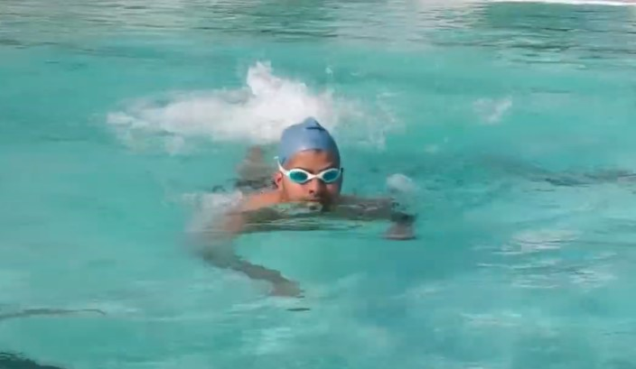

Tak zwany piesek to najprostszy styl pływacki, popularny zwłaszcza wśród dzieci, które dopiero uczą się pływać. Jednocześnie jest najstarszą techniką pływania znaną ludzkości – uważa się, że ten sposób poruszania się w wodzie był znany już w czasach starożytnych.
Nasi przodkowie prawdopodobnie nauczyli się go w wyniku obserwacji pływających zwierząt.Technika pieska jest łatwa do opanowania i w dużej mierze intuicyjna.
Pływak leży na wodzie klatką piersiową do dołu i porusza rękami w górę i w dół zataczając małe kółka. Nogi pracują naprzemiennie, wykonując pionowo ruch nożycowy. Piesek jest stylem mało praktycznym i dość wolnym.
